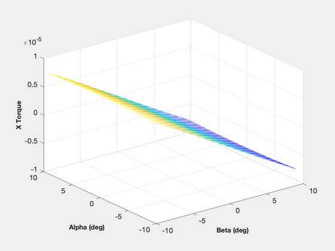
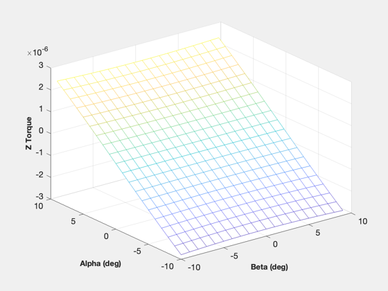
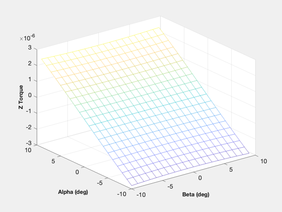
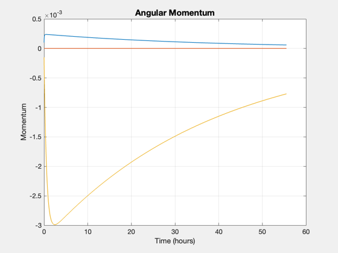
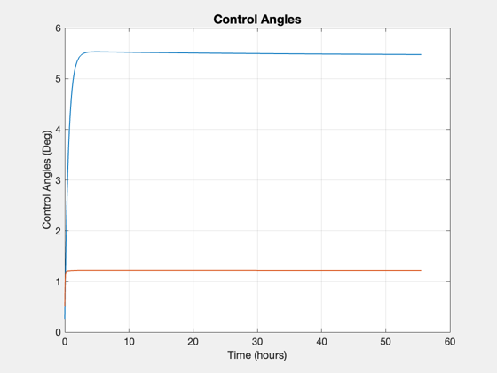

Controls the momentum in a spacecraft using solar pressure.
Uses a PI controller and a two degree of freedom gimbal at the end of the solar array. The solar pressure flap is a perfect mirror. The available torque is first mapped over a range of angles. Then a controller is designed and simulated. Note that the array can only provide torques in X and Z.
Since version 1. -------------------------------------------------------------------------- See also SolarF., SunBeta, Mesh2, Normal, Plot2D, TimeLabl, Cross, SumV -------------------------------------------------------------------------
Contents
%-------------------------------------------------------------------------- % Copyright 1996 Princeton Satellite Systems, Inc. All rights reserved. %--------------------------------------------------------------------------
Constants
%----------
degToRad = pi/180;
radToDeg = 180/pi;
solarPressure = 1350/3e8;
The solar panel parameters in the inertial frame
%------------------------------------------------- rCP = [ 0.0 0.0;... 5.0 -5.0;... 0.0 0.0 ]; area = [0.5 0.5]; rho = [0 0;1 1;0 0;0 0]; % All specular reflection (perfect mirrors) normal = [0 0;0.7071 0.7071;0.7071 0.7071]; % This orientation gives us decoupled x and z torques
The nominal sun direction is +z
%--------------------------------
sunBeta = 0*degToRad;
uSun = [0;-sin(sunBeta);cos(sunBeta)];
tX = zeros(20,20);
tY = zeros(20,20);
tZ = zeros(20,20);
alpha = (1:20) - 11;
beta = (1:20) - 11;
Map out the control torques for +/- 10 degree rotations
%-------------------------------------------------------- for i = 1:20 for j = 1:20 cA = cos(alpha(i)*degToRad); sA = sin(alpha(i)*degToRad); cB = cos( beta(j)*degToRad); sB = sin( beta(j)*degToRad); c1 = [cA 0 sA;0 1 0;-sA 0 cA]*[1 0 0;0 cB -sB;0 sB cB]; c2 = [cA 0 -sA;0 1 0; sA 0 cA]*[1 0 0;0 cB sB;0 -sB cB]; normalI = [c1*normal(:,1),c2*normal(:,2)]; f = SolarF( solarPressure, rho, normalI, uSun, area ); t = SumV( Cross( rCP, f ) ); tX(i,j) = t(1); tY(i,j) = t(2); tZ(i,j) = t(3); end end Mesh2(beta,alpha,tX,'Beta (deg)','Alpha (deg)','X Torque'); Mesh2(beta,alpha,tY,'Beta (deg)','Alpha (deg)','Y Torque'); Mesh2(beta,alpha,tZ,'Beta (deg)','Alpha (deg)','Z Torque');
 
 Compute the forward gains in torque/rad
%----------------------------------------
kFX = (max(max(tX)) - min(min(tX)))/(( max(beta)- min(beta))*degToRad)
kFZ = (max(max(tZ)) - min(min(tZ)))/((max(alpha)-min(alpha))*degToRad)
kFX = 4.6638e-05 kFZ = 1.6082e-05
Simulate the control system
%---------------------------- nSim = 2000; dT = 100; tD = [1.e-6;0;-1.5e-6]; % disturbance torque h = [0.0001;0;-0.00015]; % initial angular momentum hI = [0;0;0]; % integral of momentum
Design the controller
%----------------------
w = 0.001;
zeta = 0.7071;
kM = 2*zeta*w*[1/kFX;1/kFZ];
kI = w^2*[1/kFX;1/kFZ];
Create the plotting arrays
%--------------------------- hPlot = zeros(3,nSim); tCPlot = zeros(3,nSim); tDPlot = zeros(3,nSim); aPlot = zeros(2,nSim); for k = 1:nSim hI = hI + h; alpha = -(kM(1)*h(3) + kI(1)*hI(3)); beta = (kM(2)*h(1) + kI(2)*hI(1)); cA = cos(alpha); sA = sin(alpha); cB = cos( beta); sB = sin( beta); c1 = [cA 0 sA;0 1 0;-sA 0 cA]*[1 0 0;0 cB -sB;0 sB cB]; c2 = [cA 0 -sA;0 1 0; sA 0 cA]*[1 0 0;0 cB sB;0 -sB cB]; normalI = [c1*normal(:,1),c2*normal(:,2)]; f = SolarF( solarPressure, rho, normalI, uSun, area ); t = SumV( Cross( rCP, f ) ); hPlot(:,k) = h; tCPlot(:,k) = t; tDPlot(:,k) = tD; aPlot(:,k) = [alpha;beta]*radToDeg; h = h + dT*(tD + t); end time = dT*(0:(nSim-1)); [tPlot, tLbl] = TimeLabl( time ); Plot2D(tPlot, hPlot,tLbl,'Momentum','Angular Momentum'); Plot2D(tPlot, aPlot,tLbl,'Control Angles (Deg)','Control Angles'); yL = ['X Torques';'Y Torques';'Z Torques']; Plot2D(tPlot,[tCPlot;tDPlot],tLbl,yL,'Control and Disturbance Torques','lin',['[1 4]';'[2 5]';'[3 6]']); %-------------------------------------- % PSS internal file version information %-------------------------------------- % $Id: 1fd938c67f590c0db11151092ea268ec1010f5c3 $ 